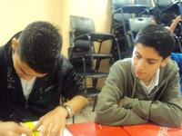
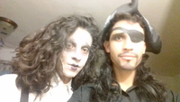
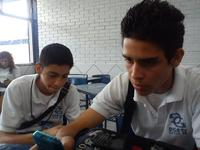
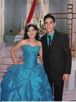
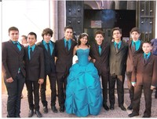
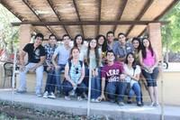
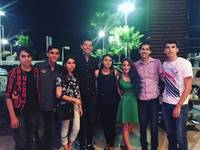
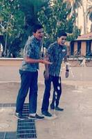
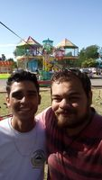
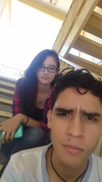

 Mi mejor amigo desde antes de entrar a quinto de primaria es Alejandro somos como hermanos inseparables.
 Increíblemente después de salir de secundaria y pensar que mis tiempos de chambelán acabaron, entrando a la universidad mi vecinita me pide que sea su chambelán y pues como decir que no si tengo más de 10 años de conocerla.
Amigos de la prepa tuve muchos. En estas fotos algunos de ellos. De las fotos de abajo la izquierda fue en mi cumpleaños hicimos un tipo picknic en el parque Sinaloa y como no había pastel me embarraron la cara en un pay que habíamos comprado. La de la derecho fue en el cumpleaños de Jair. Desde que salimos de prepa tenemos esa tradición de en cada cumpleaños salir juntos a comer.
 Les voy a mencionar a un amigo que aun que no estamos en la misma carrera si nos frecuentamos y vemos de vez en cuando. Jair, lo conocí en la prepa y pues claro que era unos de los fantastic 4.
 Otro gran amigo pero de menos antigüedad es Willy. Lo conocí en la universidad y si bien llevamos poco de conocernos somos como uña y mugre.
 Una amiga muy querida que también conocí en la universidad es Wendy. Ella es muy buena persona, honesta, inteligente, carismatica bueno es un ejemplo a seguir.
Mencionando a los de la universidad Saby me acompaño desde los cursos de homogenización hasta hoy. Hamed la conocí en segundo semestre y aun vamos en el mismo slaon. Creo que tengo muchísimos amigos muchos no los mencione aquí pero son igual de importantes para mí. Todos han formado parte de mi vida y se los agradezco.